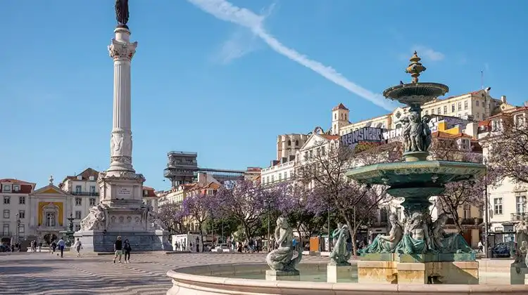
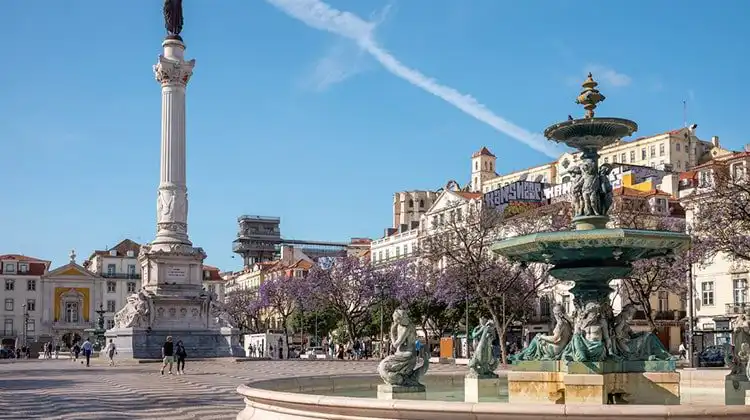

Lisboa
Lisboa, a capital de Portugal, é uma cidade vibrante e cheia de história. Situada junto ao Rio Tejo, encanta com os seus bairros tradicionais, como Alfama e Bairro Alto, e atrações icônicas como o Mosteiro dos Jerónimos, a Torre de Belém e o Castelo de São Jorge. Lisboa oferece uma combinação única de cultura, gastronomia e uma atmosfera descontraída. A cidade é também conhecida pelos seus famosos elétricos e miradouros, que proporcionam vistas deslumbrantes. Com uma oferta cultural diversificada, Lisboa é um destino imperdível para qualquer viajante.
 

Vantagens
- Rica em história e cultura, com muitos monumentos e museus.
- Gastronomia diversificada e tradicional, com destaque para o pastel de nata.
- Excelentes vistas panorâmicas a partir dos miradouros.
- Transporte público acessível e eficiente, incluindo elétricos e metrô.
Desvantagens
- Custos de alojamento elevados em certas épocas do ano.
- Trânsito intenso em áreas centrais, especialmente em horários de pico.
- Grandes fluxos turísticos, que podem impactar a experiência local.
- Algumas ruas são íngremes e podem ser cansativas para explorar.